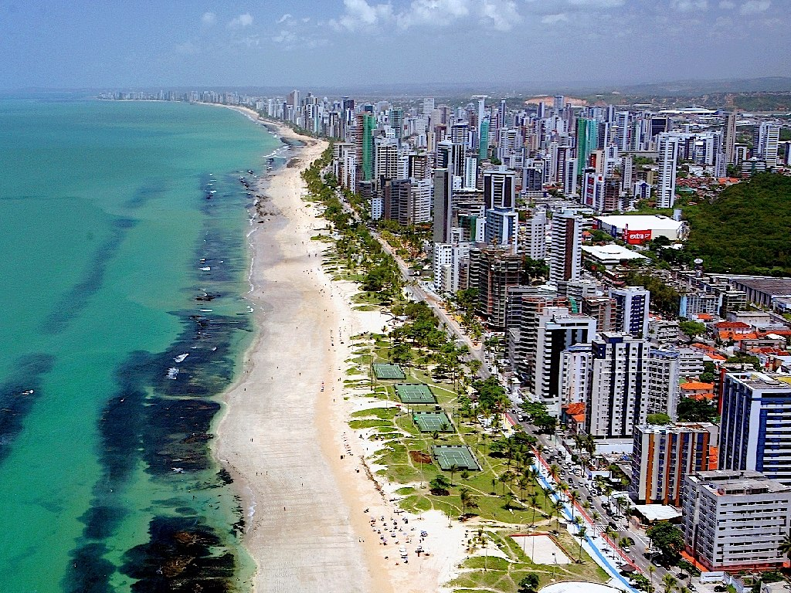

Pernambuco tem grande relevância histórica desde o período colonial. Recife é importante centro econômico, tecnológico e cultural do Nordeste. O estado é berço do frevo, do maracatu e de manifestações populares. O turismo é impulsionado por Porto de Galinhas e Olinda. A economia inclui comércio, indústria, tecnologia e agricultura. O carnaval pernambucano é reconhecido pela forte identidade cultural. Alagoas
